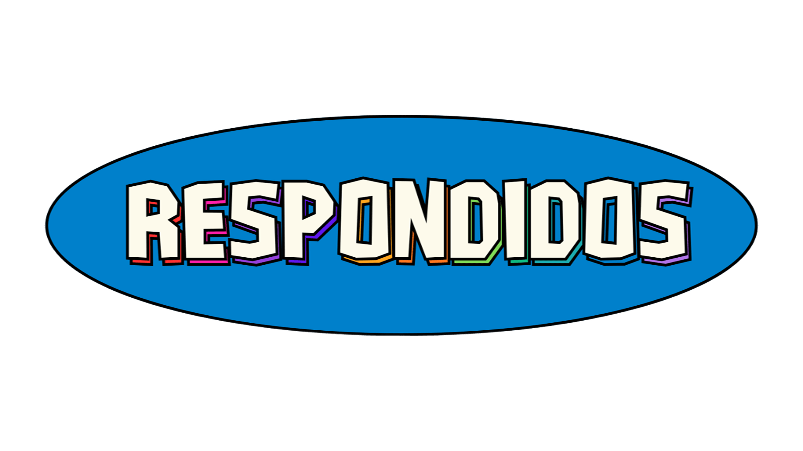

Pone a prueba tus conocimientos y bardea a todos tu amigxs
300+ preguntas • 6 categorías • Diversión garantizada
🌟
Todas las Categorías
Mezcla todas las categorías para el desafío definitivo
300 preguntas • Máxima dificultadCada partida incluye 10 preguntas aleatorias de la categoría seleccionada